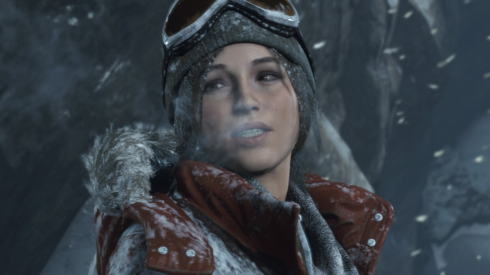

Tomb Raider: The Ten Thousand Immortals

Herní série Tomb Raider dostala před pár roky restart, který se setkal s pozitivním ohlasem. Mladá Lara Croft tak začíná zcela od znovu ve hře Tomb Raider 2013 jako ohrožená a slabá archeoložka, která se postupně ve hře začne měnit v neohroženého a nepohodlného nepřítele pro ostrov Yamatai. Po tedy úspěšném prvním dílu byl oznámen díl druhý Rise Of The Tomb Raider. Mezi tyto dva herní tituly se ovšem vmísila kniha Tomb Raider: The Ten Thousand Immortals.
Jelikož kniha vyšla zatím jen v anglickém jazyce, nebude bohužel všem dopřáno si ji přečíst. Ovšem pokud dotyčný umí alespoň trochu anglicky nemusí se bát, že by z toho nic neměl. Prvních asi třicet stran je trochu náročných, než se člověk začte do děje a zvykne si na některá dlouhá souvětí, začne správně zařazovat použitý čas atd…tak to chvíli trvá, ale není to zase tak obtížné, aby to člověk hned uložil k ledu. Autor Dan Abnett má svělý styl psaní, kniha hned na začátku nastíní, o co v knize půjde a tím začíná okamžité Lařino putování.
Děj se odehrává na různých místech, hrdinka cestuje po Evropě, poznává nové lidi, hledá indicie k nalezení toho, co potřebuje. Některé pasáže jsou klidné, jiné jsou zase dosti napínavé, kdy se mi nechtělo knihu odložit a musel jsem dočíst kapitolu a jít hned na další. Co mi zde trochu vadí je to, že se Lara nechá na začátku unést od dvou padouchů, pak se ale dává do boje. Poté se zase nechá přemoci a odvést k dalšímu nepohodlnému občanovi, od kterého ale dokáže utéct. K popisu knihy musím užít trochu spoilerů, ale spíše takových nenápadných, takže kdo ji ještě nečetl nebude mít potuchu kdy popsané situace nastanou.
O akční části, kdy jde skutečně o život tu není nouze. Po Laře jdou totiž hned dvě organizace, které se snaží dostat to, co Lara má u sebe. Líbí se mi tu to, že organizace spolu nespolupracují a jdou tak vlastně proti sobě, takže je to takový začarovaný kruh a sám pak člověk musí poznat, která je na dobré straně a která na té špatné. A kdo ví, možná na té dobré není ani jedna, vzhledem k událostem, které v knize proběhly.
Lidé, kteří knihu dočetli ještě před vydáním druhé dílu Tomb Raidera měli možnost zaznamenat, co z knihy se vyskytuje ve hře. Není toho převratně moc, spíše po skromnu, ale člověk si při hraní prostě vzpomene na skvělé čtení. Jak jsem již zmínil autor není žádnej nováček v oboru. Je to uznávaný autor knih a také se podílel a podíli na psaní scénařů do některých her. Proto když člověk má napsat knihu ke hře a má cit pro herní průmysl a ví, o co v něm jde, není pak kniha od takového autora tak strašné fiasko, jako když se podle hry natočí film. Konec konců knih podle her je více. Autoři si volí vlastní cestu, zvolí si postavy z her, nějaký ten obsah, prostředí a může z toho být úspěch. Například je napsáno tuším šest dílů knih Resident Evil, které vyšly i v češtině a musím říct, že je o co stát.Co se týká filmů, tak tam už si většina z nás nic neslibuje, víme přeci jak to dopadá.
Ale zpět ke zmiňované knize. Děj se pěkně stupňuje jak s objevováním neznámého, tak se schopnostmi Lary Croft. Čekal jsem akorát to, že Lara bude více akčnější od samého začátku, jelikož v prvním díle hry dokázala zlikvidovat tolik nepřátel a své první náročné dobrodružství přežila. Toto mě někdy nutilo číst některé pasáže znovu, abych si byl jist tím, že jsem opravdu vše správně pochopil. Ale postupem času se to i zde mění. Po knize následuje pak hraní druhého restartovaného dílu, takže další skvělý zážitek pro fanoušky série TR a nejen to.
Autoři totiž napsali ještě jednu knihu, která je též zatím jen v angličtině. Co nevidět už jí budu mít doma a jsem jen zvědav jestli kniha bude navazovat spíše na události po prvním dílu nebo to bude zase takový předkrm před třetím dílem TR, na kterém se už pracuje. Lidem se slabší angličtinou se výrazně rozšíří slovní zásoba, lépe pochopí fungování časů, přímou řeč ve větách a naučí se nové fráze. Jako studium angličtiny je kniha naprosto bezvadná. Jsem fanouškem TR série, takže o to je mé nadšení větší. Sám jsem se hodně anglických slov naučil asi cca 300 a také několik důležitých vět. Můžete to brát i jako motivaci jak svou angličtinu zlepšit a zlepšit si tak herní zážitek u her, kde je znalost AJ nutností. Těm kteří knihu zkusí přeji hodně štěstí a uvidíte, že učení se cizího jazyka není zase takový peklo. Naopak, tohle byla skvělá zábava a těším se až mi přijde další kniha, o které pak třeba taky něco napíši.